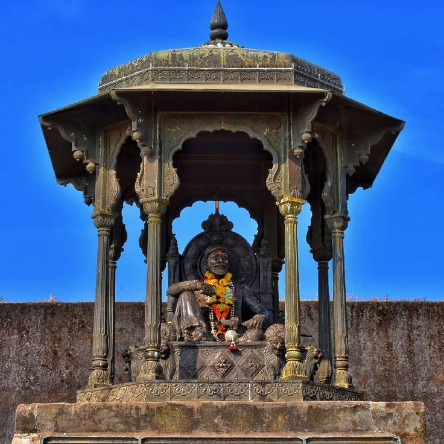
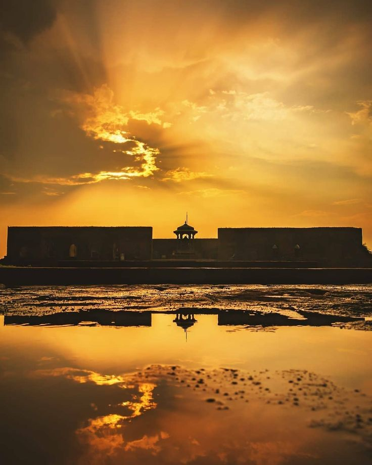
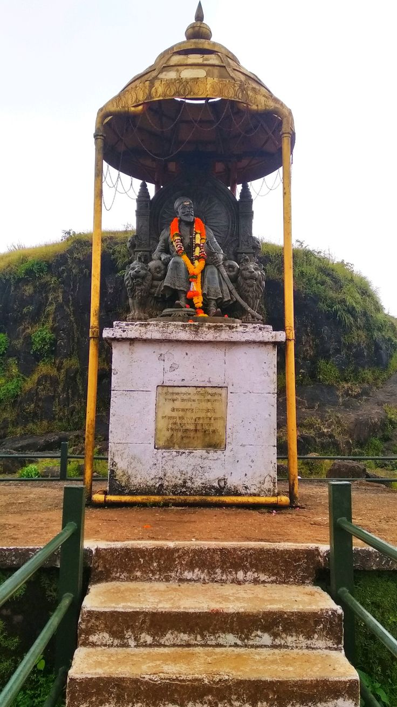
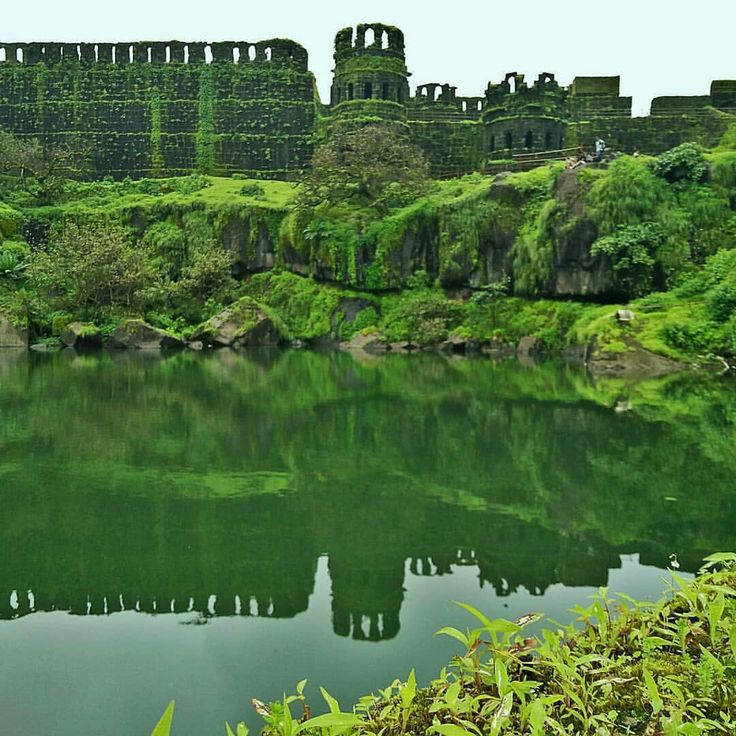
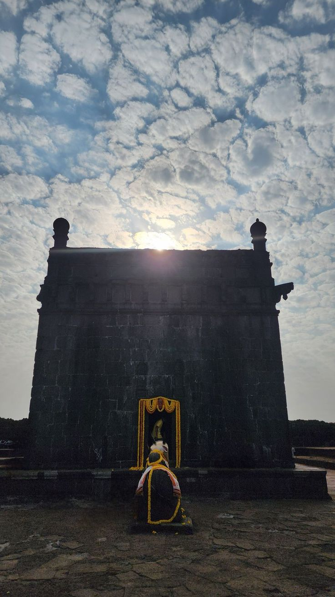
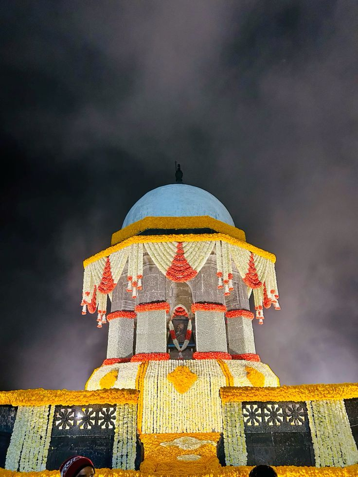

Raigad Fort is one of the most important forts in Indian history and the राजधानी (capital) of the Maratha Empire under Chhatrapati Shivaji Maharaj. 🏰 Early History Originally called Rairi, the fort was under the control of local chiefs and later the More family of Jawali. In 1656, Shivaji Maharaj captured it from Chandrarao More. Recognizing its strategic strength—steep cliffs, difficult access, and natural protection—he decided to develop it as his capital. 👑 Rise as Capital of Maratha Empire Shivaji Maharaj renovated and expanded the fort with strong walls, gates, palaces, and administrative buildings. In 1674, he was crowned as Chhatrapati at Raigad in a grand ceremony. This marked the formal establishment of the Maratha Empire. Raigad became the center of governance where important decisions were taken in the Rajdarbar. The fort included: Royal palace (Rajwada) Queen’s quarters (Ranis Vasa) Jagdishwar Temple Marketplace (Bazarpeth) Water reservoirs and granaries ⚔️ Political Importance From Raigad, Shivaji Maharaj controlled vast territories and built a strong administration system. The fort symbolized Swarajya (self-rule) and independence from Mughal and other foreign powers. After Shivaji Maharaj’s death in 1680, his son Sambhaji Maharaj ruled the empire. However, during the rule of Aurangzeb, the Mughals attacked and captured Raigad in 1689. Sambhaji Maharaj was also captured and executed by the Mughals. 🏴 Mughal and British Period After its capture, Raigad lost its status as the capital. It later came under Mughal control and eventually passed into the hands of the British in the 18th century. Over time, many structures were damaged or destroyed. 🕊️ Present Significance Today, Raigad Fort is a protected monument and a major historical and tourist site in Maharashtra. The Samadhi (memorial) of Shivaji Maharaj is located here, where thousands of people visit to pay respect. Raigad stands as a proud symbol of Maratha glory, courage, and good governance, and it continues to inspire generations with the vision of Swarajya.